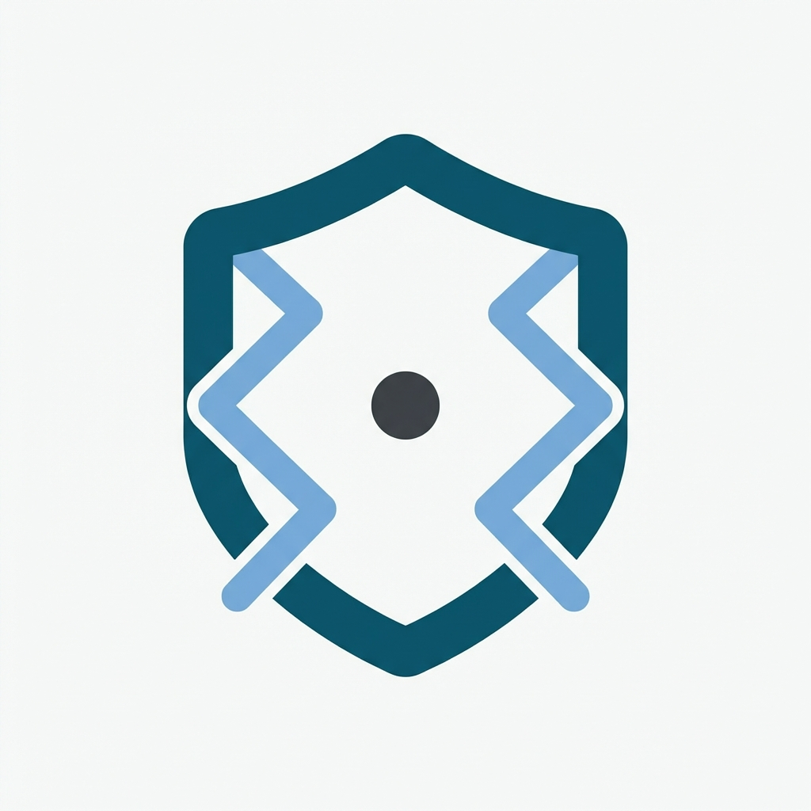

local-privacy-guard helps OpenClaw users protect privacy before sending content to external models, sharing logs, exporting notes, or posting debugging output.
Its purpose is intentionally narrow: replace high-confidence sensitive values locally, with zero network access and safe defaults.
.txt, .md, .json, .csv, .tsvcat secret.txt | python3 scripts/redact.py --stdin --json
python3 scripts/redact.py --input ./note.md --output ./note.redacted.mdlocal-privacy-guard 的核心用途，是帮助 OpenClaw 用户在把内容发给外部模型、分享日志、导出笔记或贴出调试信息之前，先在本地保护隐私。
它的目标非常克制：只做一件事——在零联网、默认安全的前提下，把高置信度敏感值替换掉。
.txt、.md、.json、.csv、.tsvcat secret.txt | python3 scripts/redact.py --stdin --json
python3 scripts/redact.py --input ./note.md --output ./note.redacted.mdv0.1.2 — language-toggle page and OpenClaw-focused positioning.